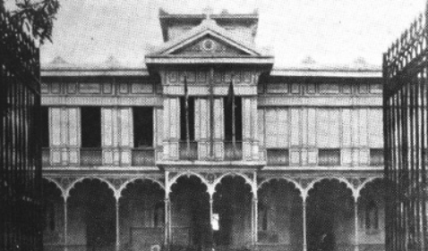
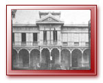
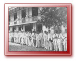
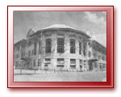

1904-1951

Humble beginnings as a Business School
The organic act which established the Civil Governement in the Philippine Islands in 1901 made provision for the established of the Philippine School of Commerce. However, the school ws organized in 1904.
1904
In response to the demand for training personnel for the government service and to the felt need to provide skills essential for private business employment, the Manila Business School (MBS) was founded on October 1904 as part of a City School system under the superintendence of Gabriel Ambrose O'Reilly.
It offered the prescribed intermediate curriculum and such vocational-technical courses as typing, bookkeeping, stenography, and telegraphy.

One of the very first homes of the Manila Business School.
No.38 Gunao Street corner Arlegui in Quiapo (1905)
1908
On account of the fact that the great majority of its students came from the provine, the MBS was made into an Insular (or national) school and accordingly renamed Philippine School of Commerce (PSC). At first, the intermediate curriculum was prescribed in addition to subjects such as typewriting, bookkeeping, and stenography. Afterwards a four-year secondary course in commerce was offered in addition to the courses in Bookkeeping, Stenography, Typewriting and Telegraphy.

This is the edifice on Gen. Solano Street (in San Miguel, Manila) occupied by the Philippine
School of Commerce (1908-1933). This building was formerly occupied by the Bureau of
Audits and the Philippine Senate.

PSC Faculty, Filipino and American Teachers (1908)
1911
The PSC was placed again under the supervision of the Superintendent of City Schools for Administrative purposes only, but retained its status as an Insular school. The PSC produced its first batch of high school graduates. During this year the course in telegraphy was discontinued since the Telegraph School of the Bureau of Posts offered better facilities.
1912
The PSC offered a one-year course in Stenography for high school graduates. The course proved to be successful and popular because of its positive results. Those who took the course got easily employed as stenographers and later as office managers.

Students of the Philippine School of Commerce
and the building behind the San Miguel Church (1912)
1917
To keep in step with changing conditions, the PSC started revising its courses of study. Under the leadership of Acting Principal Luis F. Reyes, it continually raised its general requisites. To enable young people employed during the daytime to acquire further training, it opened night classes (These classes would be discontinued in 1932 because of the government's retrenchment policy).

Luis F. Reyes
From 1904, the PSC has known several homes: an old Spanish building located at the foot of a small bridge at San Rafael Street, near the Mapa High School to an old house at the corner at Dulungbayan Street (now Rizal Avenue) and Dolores Street (now Bustos Street), Santa Cruz, Manila. Two years later, it was transferred to Gunao Street, corner Arlegui in Quiapo, in the building which now housed the Manila Blue Printing. At the end of another two years, it found itself in a building in General Solano Street, San Miguel, formerly occupied by the Bureau of Audits and the Philippine Senate where it had the consolation of staying for four years. A building behind the San Miguel Church was its next destination where it stayed for about twelve years. Then back to the Gen. Solano Building. In this last place, it remained for seven years up to 1933.
1933
The PSC was merged with the Philippine Normal School (PNS) and the Philippine School of Arts and Trades. During the merger, which lasted for 12 years, it operated under the supervision and administration of the PNS Superintendent. The PSC students who completed their respective courses were considered graduates of the PNS. The PSC replaced its secondary curriculum with a two-year junior college curriculum.

The House of the PNS-PSC Merger, Paco, Manila (1933-1945)
1940
The existence of PSC caught the attention of then President Manuel L. Quezon. In his graduation address at the Rizal Memorial Stadium on March 26, 1940, he said in part (addressing the graduates of the School of Commerce):
"I can tell you why you are forgotten on these occasions. It is because you do not belong here... I will do my best to get the National Assembly to set aside a special appropriation for a building for the School of Commerce, so that graduates of this school will henceforth be where they can be noticed."
1942
Subsequently, then Congressman Manuel A. Alazarte, with then department head Luis F. Reyes, formulated a bill to this effect and was presented to Congress. Unfortunately the Pacific War broke out. The plan was not carried out.
During the war years, the PSC was among those institutions of learning compelled to declare a blackout on culture.
1946
Shortly after liberation, Superintendent Luis F. Reyes resumed tasks for the re-establishment and rehabilitation of the school. The appeal was returned with more than eight thousand pesos allocation received from the national funds of the Bureau of Public Works for purposes of repairs and maintenance of public buildings.
The ruins of the Normal Hall building was turned into an improvised house of learning and on August 4, 1946, it was able to open formally regular classes to surprisingly eager students. The PSC offered one-year and two-year courses in retailing merchandising and a complete four-year course in distributive arts education.
1947
Meanwhile, the PNS found it necessary to use the Normal Hall building as a dormitory. PSC, in turn, resigned to its lot of again working in humble crowded rooms. This drove school authorities to seek remedies for this unbearable situation. Representations were made to the Philippine Alien Property Administrator, through Malacañang and the Department of Foreign Affairs, for the acquisition of the Lepanto site.
Such representations were so intensified that on July 31, 1947 the two buildings in Lepanto (now S.H. Loyola) Street in Sampaloc, Manila were turned over to the Philippine Government for the exclusive use of the PSC. The School began to move and on August 4 the official transfer was effected.
Luis F. Reyes was appointed PSC Superintendent.

This building was occupied by the House of Congress before it was transferred to PSC (1947)
1948
The PSC acquired the P.E. grounds, also on S.H. Loyola Street.
1949
Republic Act No. 415 was passed, providing for the establishment of teacher-training departments in government schools. The PSC was one of the beneficiaries of the said Act.
1951
Three departments were organized: Teacher Training, Business Education, and Research.

When the Philippine Educational System celebrated its Golden Jubilee, the PSC was awarded a plaque in
recognition of its achievement "for bold and successful pioneering in vocational business education."